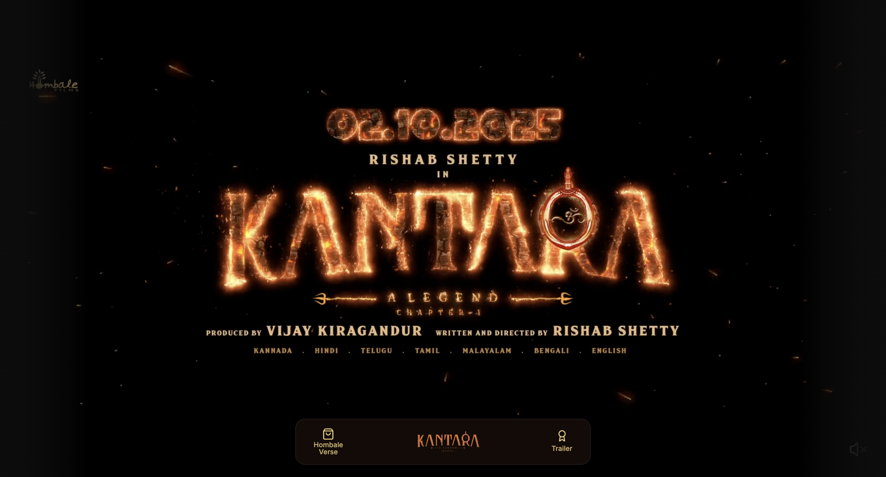
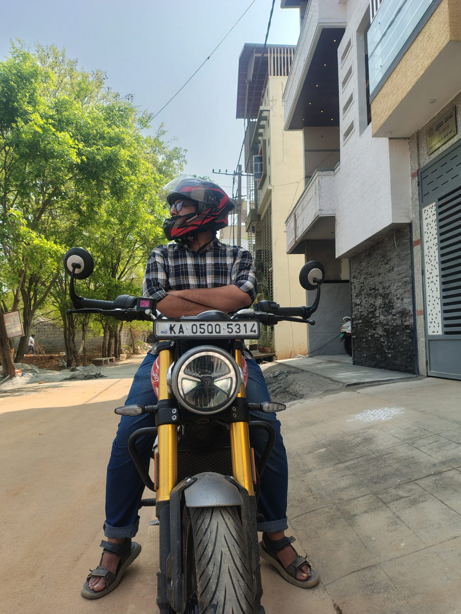
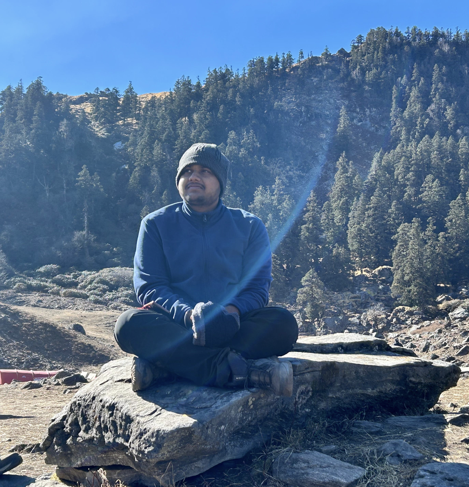

I'm a
I enjoy building scalable backend systems, exploring cloud infrastructure, and experimenting with automation and agentic workflows.


Architected systems for high concurrency. Built contest backends handling 20k+ concurrent users and ~2000 RPS with sub-1% failure rates, validated through rigorous distributed Locust deployments.

Deep focus on decoupled, event-driven architectures. Designed AWS SQS fan-out pipelines that orchestrate concurrent LLM execution, enabling a 50× throughput gain in production data processing.

Exploring the intersection of AI and Infrastructure. Built modular MCP servers that allow LLMs to safely navigate and control AWS environments, powering GitHub Copilot to execute complex programmatic tasks.
Off the screen, I spend time tracing map contours and climbing altitudes. High-altitude trekking clears the headspace and resets the baseline for deep, focused work.

Whether it's debugging a stubborn distributed system trace or pushing through the final miles of a century ride, endurance is the recurring theme. I like hard climbs — in code and in real life.
